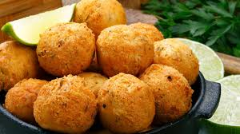
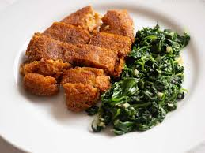

Pastel de Nata

Bacalao

Bolinhos de Bacalhau

Caldo Verde

Alheira
Alheira
Es un tipo de embutido que originalmente se elaboraba con una mezcla de carne de ave y pan, aunque hoy en día también puede incluir carne de cerdo y otras carnes. Se creó durante la Inquisición para que los judíos conversos pudieran simular que comían productos de cerdo. Se suele asar o freír y se sirve acompañado de patatas y verduras.